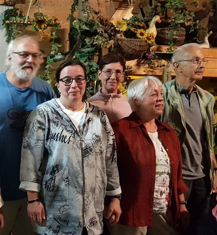
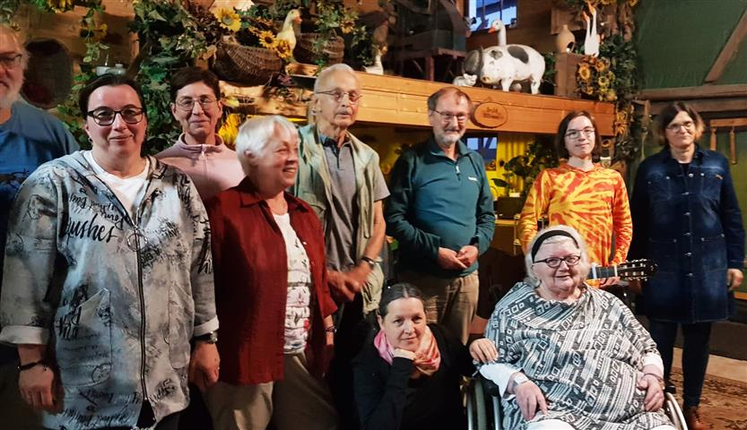

Rohr. Schon zum fünften Mal boten Autorinnen und Autoren des Südthüringer Literaturvereins am Samstag, dem 5. August 2023, ab 19:00 Uhr in der Kulturscheune Rohr eine Lesung an. Unter dem Titel „Scheunensommer" brachten sie neue Texte aus der eigenen Feder zu Gehör, gewürzt mit Humor, angeregt von Sommerwind und Sommerfrische und musikalisch umrahmt von Liedern und konzertanten Gitarrenstücken.
An der Lesung nahmen neben Michael Carl, Sandra Eberwein, Ulrike Blechschmidt, Iris Friebel und Liedermacher Bernd Friedrich auch Dietmar Hörnig, Roswitha Lesser, Manuela Ploch, Holger Uske, Lukas Eberwein mit seiner Konzertgitarre und Heidi Büttner teil. Sie erhielten viel Beifall vom Publikum, wobei besonders die Musiker und dabei der Gitarrist mit ihren eigenen Stücken viel Zuspruch fanden. Ursula Schütt erklärte an diesem Abend ihren Abschied von der aktiven Vorlese-Laufbahn. Mit ihrer Erzählung „Paulina pflückt Brombeeren" konnte sie noch einmal die Zuhörer begeistern.
Der Abend war Teil der Lesereihe 2023 des Vereins, die von der Thüringer Kulturstiftung sowie der Rhön-Rennsteig-Sparkasse gefördert wird.

